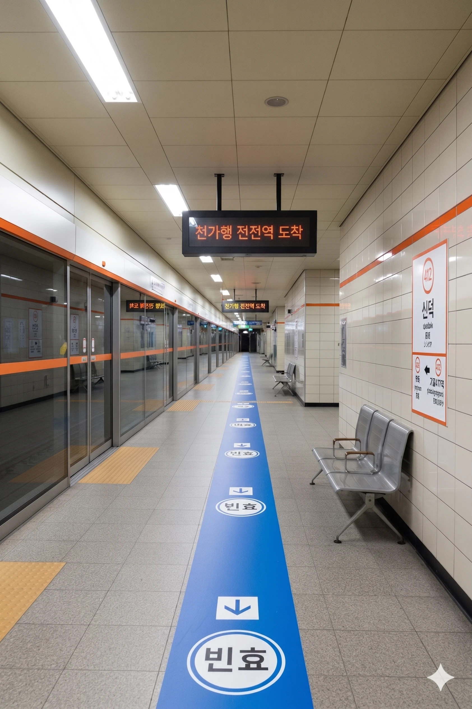
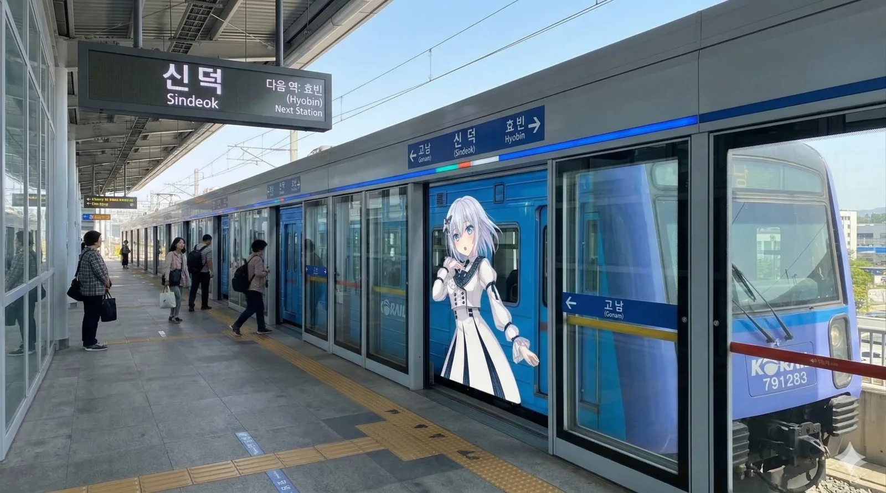

신덕역
1. 개요
효빈 도시철도 4호선 412번 및 빈효선 광역전철 B08번. 효빈광역시 중구 신덕동 563 소재.
2. 역 정보
효빈광역시 중구 신덕동에 위치한 주요 환승역이다. 특기할 만한 점은 이곳이 중구와 동구의 경계 지역에 절묘하게 위치하고 있다는 점이다. 행정구역상으로는 엄연히 중구 신덕동에 속하지만, 2번이나 5번 출구로 조금만 걸어 나가면 바로 동구 사가당동으로 진입하게 된다. 이러한 지리적 특성 덕분에 중구 주민들뿐만 아니라 동구 사가당동 아파트 단지(우미린 등) 주민들의 접근성도 매우 뛰어나 이용 수요가 탄탄하게 받쳐주는 역이다.
2.1. 역출구 정보
  신덕역 출구 정보
신덕역 출구 정보
|
||
|---|---|---|
| 번호 | 주요 시설 및 방향 | 비고 |
| 1 | 내조1동행정복지센터, 방송통신대 효빈본부 (중구 내조2동 / 462m) | |
| 2 | 사가당 우미린 아파트 (동구 사가당1동), 사가당병원, 사가당공원 (동구 / 497m) | 동구 방면 |
| 3 | 신덕주공아파트, 신덕초등학교, 신덕동행정복지센터, 내조중학교, 효빈중부소방서, 신덕119안전센터 직할, 효빈신덕동우체국 | |
| 4 | 내조1동행정복지센터, 방송통신대 효빈본부, 하나로마트 효빈점 (253m) | |
| 5 | 효빈역고가차도, 단남초등학교, 사가당 우미린 아파트, 신덕수목호텔 (1성급 / 350m), 신덕 전통 떡 박물관 | 동구 방면 |
3. 승강장
4호선
※ 복선 상대식 승강장 (지하 3층)

4호선 승강장 전경
| 장 원 ↑ | ||||
| 하행 | ㅣ | ㅣ | ㅣ | 상행 |
| ↓ 가동사거리 | ||||
| 상행 | 4 효빈 도시철도 4호선 (완행/급행) | 해운산업지구 방면 (급행 정차) |
| 하행 | 4 효빈 도시철도 4호선 (완행/급행) | 가동사거리 · 천가 방면 (급행 정차 - 이후 우택역까지 전역 정차) |
빈효선 광역전철
※ 2면 2선 복선 섬식 승강장 (지상 2층)

빈효선 승강장 전경
| 장 원 ↑ | |||
| ㅣ | 하행 | 상행 | ㅣ |
| ↓ 효 빈 | |||
| 상행 | 빈 빈효선 광역전철 (완행/급행) | 효빈항 방면 (급행 정차) |
| 하행 | 빈 빈효선 광역전철 (완행/급행) | 효빈 · 고남 방면 (급행 정차) |
4. 역 이용객 통계
|
신덕역 이용객 통계
| |||
|---|---|---|---|
| 연도 | 4호선 |
빈효선 |
총합 |
| 2020년 | 7,075명 | 7,494명 | 14,570명 |
| 2021년 | 7,220명 | 7,569명 | 14,789명 |
| 2022년 | 9,376명 | 8,642명 | 18,018명 |
| 2023년 | 9,666명 | 8,729명 | 18,395명 |
| 2024년 | 9,965명 | 8,817명 | 18,782명 |
5. 연계 교통
5.1. 버스 하차
효빈 시내버스 노선이 주로 경유한다.
| 정류소명 | 방향 | 경유 노선 |
|---|---|---|
| 신덕역 | 순방향 | 1, 10, 13, 14, 15, 19, 27, 121, 123, 131, 141, 161, 242 |
| 신덕역(건너편) | 역방향 | 01-1, 10-1, 31, 41, 51, 91, 72, 211, 213, 311, 411, 611, 422 |
6. 기타 및 여담
-
중구의 숨은 보석
신덕역은 화려한 번화가는 아니지만, 중구 신덕동의 조용한 주거지와 신덕 행정타운을 끼고 있는 알짜배기 환승역이다. 덕분에 출퇴근 시간에는 붐비지만, 낮 시간에는 한적하고 여유로운 분위기를 즐길 수 있다. -
'믿음(德)'의 역
역명인 신덕(Sindeok)은 '새로운 덕(New Virtue)'이라는 뜻이지만, 팬들 사이에서는 "새로운 덕질(New Deok-jil)이 시작되는 곳"이라는 우스갯소리로 불린다. 실제로 역 인근에 [BanG Dream!] 관련 굿즈 샵이 하나둘 생겨나면서, 조용한 주택가였던 신덕동이 서서히 '덕후들의 성지'로 변모하고 있다는 소문이 있다. -
지하와 지상의 조화
지하 3층 4호선 승강장은 붉은 벽돌 타일로 마감되어 따뜻한 느낌을 주는 반면, 지상 2층 빈효선 승강장은 통유리와 철골 구조가 드러난 현대적인 디자인이다. 환승 통로 중간에 있는 휴게 공간에서 창밖을 바라보며 잠시 쉬어가는 것이 이 역의 매력 포인트다. -
중구와 동구의 절묘한 경계선
행정구역상 중구 신덕동에 속해 있지만, 2번과 5번 출구로 나가면 곧바로 동구 사가당동으로 넘어가는 절묘한 위치에 자리 잡고 있다. 이 때문에 사가당 우미린 아파트 주민들은 주소지는 동구이면서 정작 대중교통은 중구의 신덕역을 이용하는 기묘한(?) 일상을 보낸다.이름은 신덕역인데 사가당동 주민이 더 많이 탄다 카더라 -
전통 떡과 서브컬처의 기묘한 동거
5번 출구 방면에 뜬금없이 '신덕 전통 떡 박물관'이 자리잡고 있는데, 최근 이 근방에 서브컬처 굿즈샵들이 하나둘 입점하면서 떡을 씹으며 최애캐 굿즈를 구경하는 기이한 혼종 상권이 형성되고 있다. 박물관 측에서도 이를 눈치챘는지 가끔 애니메이션 행사 기간에 맞춰 '캐릭터 모양 꿀떡'을 한정 판매하기도 한다. -
1성급 호텔의 패기
역시 5번 출구 인근에 있는 '신덕수목호텔'은 자그마치 1성급이라는 매우 정직한(?) 등급을 자랑한다. 하지만 역과의 접근성이 350m로 워낙 좋고 가격이 저렴해, 다른 지역에서 빈효선을 타고 넘어온 배낭여행객이나 가벼운 출장객들에게는 가성비 1티어 숙소로 찬양받고 있다.방음은 크게 기대하지 말자 -
방송통신대생들의 눈물겨운 등교길
1번과 4번 출구 쪽에 방송통신대 효빈본부가 위치해 있어, 시험 기간만 되면 두꺼운 전공서적을 들고 벼락치기를 하며 걸어가는 만학도들과 직장인 학생들의 애환을 엿볼 수 있다. 거리가 미묘하게 462m 정도 떨어져 있어, 지각 위기에 처한 학생들이 역 입구부터 학교 정문까지 전력 질주하는 모습이 심심치 않게 목격된다.